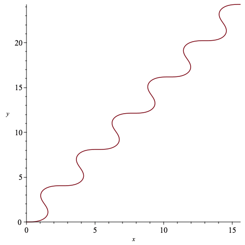
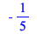
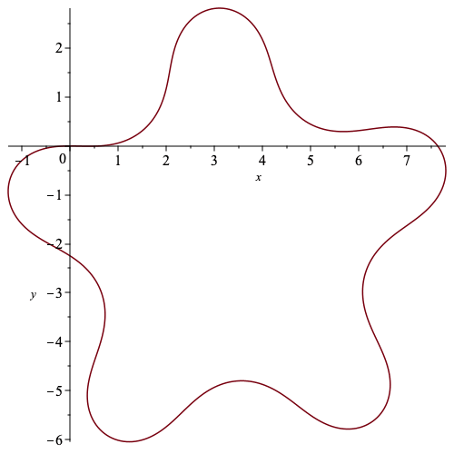
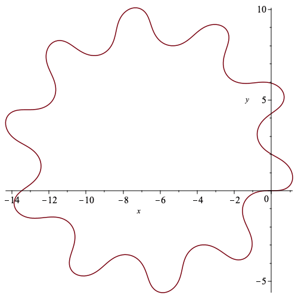
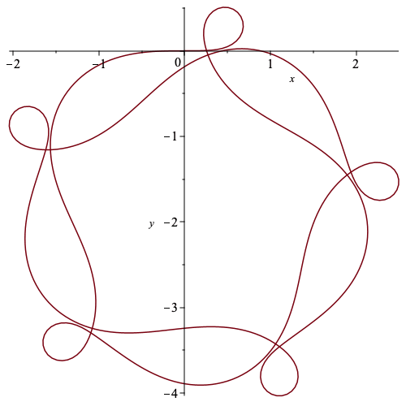

Euclidean Reconstruction
A procedure that returns an approximation of a curve with Euclidean arclength parameterized Euclidean curvature k using h points.
| > | CurveApprox := proc(k,h,a,b)
description "input curvature of a curve - k; number of partitions in the approximation - h; and starting / ending points - a, b; outputs (h+1)x2 array giving x and y components of original curve"; local i, d, Kt, C; d := (b-a)/h; Kt := Array(1..h+1); C := Array(1..h+1,1..2); Kt[1] := 0; C[1,1] := 0; C[1,2] := 0; for i from 2 to h+1 do; Kt[i] := Kt[i-1] + d/2 * (evalf(eval(k,s=d*(i-2)+a)) + evalf(eval(k,s=d*(i-1)+a))); C[i,1] := C[i-1,1] + d/2 * (evalf(cos(Kt[i-1])) + evalf(cos(Kt[i]))); C[i,2] := C[i-1,2] + d/2 * (evalf(sin(Kt[i-1])) + evalf(sin(Kt[i]))); end do; return C; end proc: |
A simple example of the procedure above to plot a curve with arclength parameterized Euclidean curvature sin(s)
| > | k := sin(s): |
| > | c := CurveApprox(k,500,0,12*Pi): |
| > | plot(c[1..-1,1],c[1..-1,2],labels=['x','y']); |
|  |
An example of a Euclidean curvature of a closed curve
| > | k := sin(s)-1/5: |
| > | int(k,s=0..2*Pi)/(2*Pi); |
|  | (1.1) |
| > | c := CurveApprox(k,500,0,10*Pi): |
| > | plot(c[1..-1,1],c[1..-1,2],labels=['x','y']); |
|  |
Some examples of curves reconstructed at the end of Section 3 that have smooth bump functions incorporated in their Euclidean curvature.
| > | h := (r_1,r_2) -> exp(-1/(r_1-t))/(exp(-1/(r_1-t))+exp(-1/(t-r_2))):
g := (r_1,r_2) -> -exp(-1/(r_1-t))/(exp(-1/(r_1-t))+exp(-1/(t-r_2)))+1: f := (r_1,r_2) -> piecewise(t<=r_1,0, t<((r_2+r_1)/2), g(r_1,(r_2+r_1)/2), t=((r_2+r_1)/2), 1, t<r_2, h((r_2+r_1)/2,r_2), t = r_2, 0, 0): |
| > | k_n := n -> eval(sin(t) + 2*Pi/n*f(0,2),t=s-2*Pi*floor(s/(2*Pi))): |
| > | c_n := n -> CurveApprox(k_n(n),500,0,2*Pi*denom(1/n)): |
| > | c1 := c_n(10): |
| > | plot(c1[1..-1,1],c1[1..-1,2],labels=['x','y']); |
|  |
| > | c2 := c_n(5/3): |
| > | plot(c2[1..-1,1],c2[1..-1,2],labels=['x','y']); |
|  |